Westcoast Bash 2010
Well, that wonderful time of year has come again, and Westcoast Bash is in the air. This year, Westcoast Bash kicked some serious ass and was chock full of suprises. For instance...
"We have removed the OTSRs from Revolution for the day!"
Yeah. We all got fooled by that. But they still had the awesome doughnuts.
"GRR!! I'M THE DOUGHNUT MONSTER!! GIMME SOME MORE DOUGHNUTS!!!"
 And we also had Morning ERT on X2!
And we also had Morning ERT on X2!
"All they need to do now is bring the sea of doughnuts into X2's station."
"Aren't there supposed to be like 700 people at this event?"
 We decided to give Tatsu a ride.
We decided to give Tatsu a ride.
Now this is how ERT should be.
Aww. Ninja won't be open today. =(
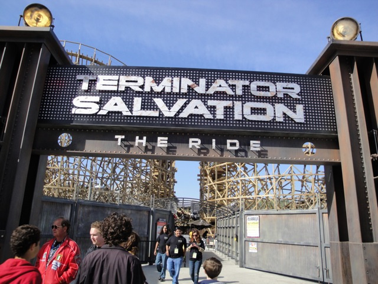
Looks like we'll just have to settle for Terminator instead.
"Housekeeping. My name is Hans and I'm here to make your bed."
"Ha Ha! The Preshow got stuck!"
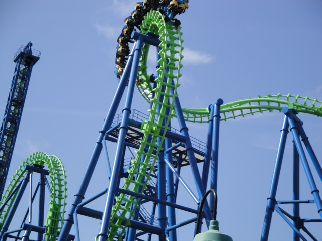
This was the only time we ever saw DejaVu run today.
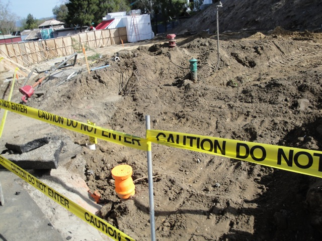
For our first backstage tour, we got a look at Mr. Six's Dance Coaster's Dirt Lot.
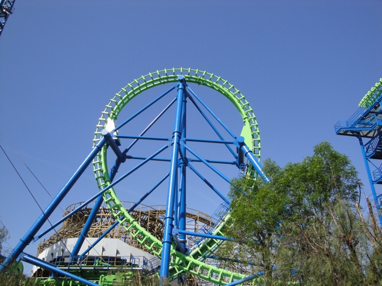
And some really kickass hidden angles. Too bad DejaVu stopped running. =(
"Photo of me nerding out during the backstage tour."
 Run Dammit! Run!
Run Dammit! Run!
"Hey Buddah. How does it feel to have your home invaded?"
 Well at least Terminator is running.
Well at least Terminator is running.
 The Track for Mr. Six's Dance Coaster has arrived! =)
The Track for Mr. Six's Dance Coaster has arrived! =)
 From this angle, Terminator actually looks pretty big.
From this angle, Terminator actually looks pretty big.
 "They took the Tunnel."
"They took the Tunnel."
 Terminator Goodness.
Terminator Goodness.
Moving on with our backstage tour.
We now present some rare Riddlers Revenge Angles.
Yummy Dive Loop Goodness.
 There's not that much airtime right there.
There's not that much airtime right there.
 Next up is Batman the Ride.
Next up is Batman the Ride.
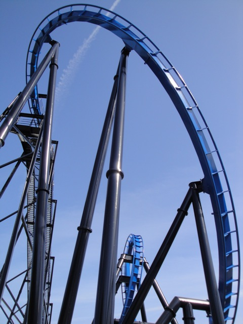
We're in a backstage tour taking rare and amazing photos of Batman! What more do you need to now?
 First Drop Goodness.
First Drop Goodness.
Can somebody please explain to me why Batman has those sleeves and who's the guy who thinks they look good?
 Too bad there's no train in this shot. But it still kicks ass.
Too bad there's no train in this shot. But it still kicks ass.
 First Drop Goodness from another angle.
First Drop Goodness from another angle.
 All those great shots of Batman made me want to go ride Batman.
All those great shots of Batman made me want to go ride Batman.
"Hey Andrew. Don't get sick."
 Needless to say, nobody got sick today.
Needless to say, nobody got sick today.
Up next would be Goliath.
Holy Crap! It got CROWDED today!!
Luckily, Scream NEVER has a long line, no matter how crowded it is.
 I see cars in this picture. That's not good. Oh well. We've got ERT, so it really doesn't matter.
I see cars in this picture. That's not good. Oh well. We've got ERT, so it really doesn't matter.
To kill some time, Cody, William, and Andrew decided to take a spin on Sierra Falls.
 "We arn't scared of getting wet. We're just scared of that Black Widow that was in our raft!"
"We arn't scared of getting wet. We're just scared of that Black Widow that was in our raft!"
Then it was time of our Westcoast Bash lunch. Which as always, was very tasty.
"We need more Blue Bunny Ice Cream in California."
Time for this year's Scavenger Hunt. And this year, we know to look under the trash cans. ;)
One of the things in the Scavenger Hunt was a little something called "The Evil Paragraph." (It really was evil!) Basically, they gave us a giant list of words in alphabetical order and we had to read this plaque, and cross off every word that was on the plaque and answer the question created from the remaining words. And keep in mind that we only had 1 hour and 15 minutes to do this as well as all the other stuff in the Scavenger Hunt. Well, me being the genius I am, thought it would be smart to take a picture of this plaque and read it from my camera. Well, I probably spent 30 minutes reading that fu*king thing and only made it to the first paragraph. And I had to move around while doing this because we couldn't split up this year. I eventually gave up in order to keep my sanity.
 After the Scavenger Hunt, we had a Scream Backstage Tour.
After the Scavenger Hunt, we had a Scream Backstage Tour.
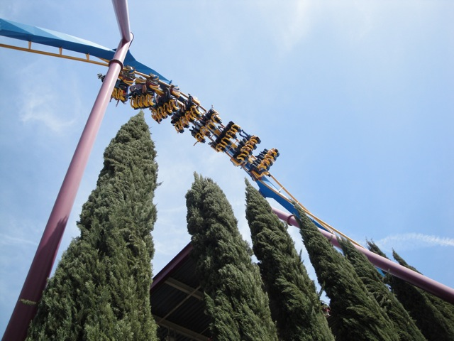
This was really freaking amazing!
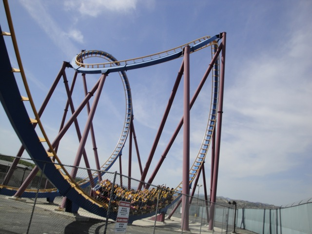
As you can see, we got to get up close to Scream.
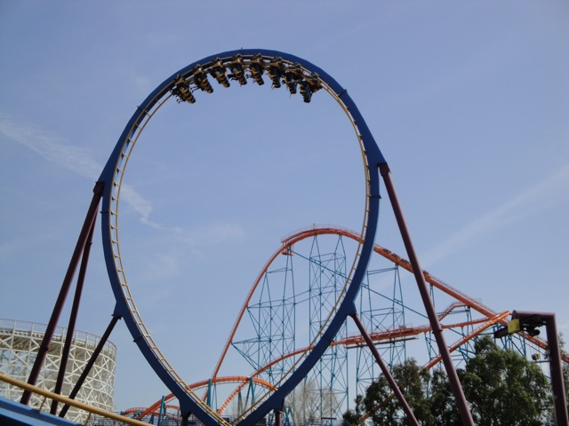
Vertical Loop Goodness.
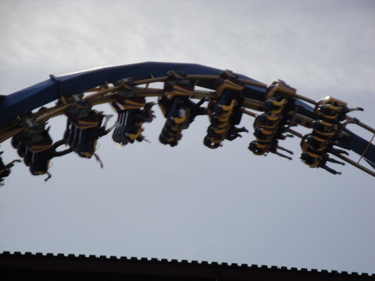
This is why Backstage Tours are really freaking amazing.
 "I don't care about all these awesome shots and cool angles. I'm just happy that I have my very own Scream Bolt!!"
"I don't care about all these awesome shots and cool angles. I'm just happy that I have my very own Scream Bolt!!"
 This photo is basically eye sex. It is so beautiful.
This photo is basically eye sex. It is so beautiful.
 When have you ever seen this angle of the first drop?
When have you ever seen this angle of the first drop?
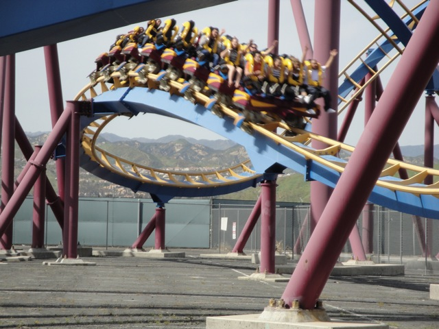
Final Dip Goodness.
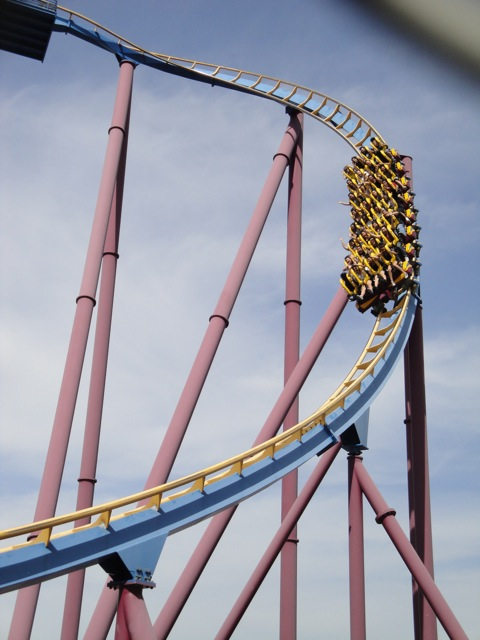
Yeah. That was awesome.
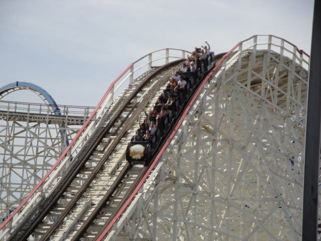
Up next was a Collosus Backstage Tour.
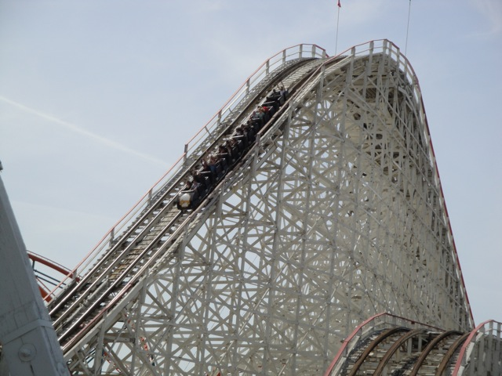
It wasn't nearly as amazing as the Scream Backstage Tour since I got most of those Collosus Shots in the Parking Lot.
"Can we please have Night ERT on the Tractor?"
And now it's time for the Q&A with Tim, Neil and Jay (I found out some really interesting stuff here).
Superman wasn't going that high today, but it was still awesome during Night ERT.
"What do you mean this isn't the 101 Freeway!? Damn! I guess those old people can't drive rumors are true!"
So that's why it was so crowded today.
Looks like the Physics Day kids overheard Neil's joke about the removal of Revolution's OTSRs.
We decided to settle for a ride on Jet Stream.
"Hey! You learn Physics in boring classrooms! Not on log flumes! Get back in your classrooms and back to work!"
 I was not amused about getting wet.
I was not amused about getting wet.
Looks like we won't get on Tidal Wave.
 Never mind.
Never mind.
After Jet Stream, I really didn't feel like going on Tidal Wave (Though I did ride it earlier this morning).
 According to Cody, this goose's name is Geoffrey Sonic. To him, geese live forever.
According to Cody, this goose's name is Geoffrey Sonic. To him, geese live forever.
"I totally forgot how much I love to soak myself on Tidal Wave's Bridge. I should start doing it alot more often."
 SPLASH!!!
SPLASH!!!
Westcoast Bash is really tiring me out. I need a Dirt Nap.
"Hey! There's no bumping allowed on the bumper cars!"
For dinner, we decided to eat at Longhorns BBQ.
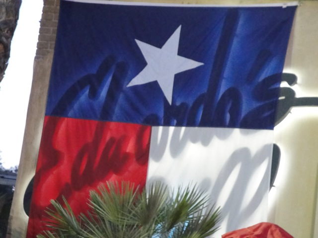
You Fail.
"Grr! I'm losing my mind at Longhorns BBQ! This is not BBQ sauce! It's blood! Gimme your soul!"
In all seriousness, Longhorns is awesome. The food is totally awesome.
Jay was right. This is the prettiest part of SFMM.
 Later, we decided to take a ride on Swashbuckler.
Later, we decided to take a ride on Swashbuckler.
"What the hell is going on here?"
 You fail.
You fail.
"Oh Crap! I didn't think this was a Starflyer!"
We decided to take a ride on Thomas, just for the hell of it.
NERDS!!!
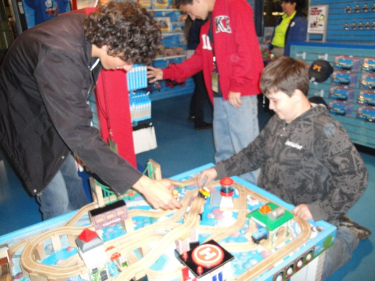
Many lives were claimed today when a series of trainwrecks were caused by a couple of evil giants.
We spun the living crap out of the Balloons. And it was awesome.
Yes. We conquered the Flight School.
We even put ourseles on the Short Bus.
While it wasn't nearly as crazy as when Cody, Isaac, Alisa, and I rode this, it was still decent. (Oh yeah. And thank you Bugs Bunny World Ride Operators for taking our pictures.)
That's enough Bugs Bunny World. Let's instead lose our sanity with this merchandise.
Wolf vs Crocodile. FIGHT!!!
"GRR!! I'M A KILLER WHALE!!! I LIVE AT SEA WORLD!!! GIMME SOME FLESH...I MEAN FISH!!!!"
Check out my Sea Anenome Glove.
I have the strangest feeling that someone is watching me.
And now onto a carousel.
Canyon Blaster had the best operations. First, the ride operator made everyone scream as loud as they could, then each person had to individually scream as loud as they could, and we had to be screaming during the ride. It was actally awesome.
"I WANT MY MOMMY!!!"
Night ERT has begun! =)
While it may seem that Collosus was the same as always...
Collosus was actually racing tonight!!!
We're going to win this coaster race for sure.
 They also gave us a completely special Westcoast Bash Soundtrack for Terminator.
They also gave us a completely special Westcoast Bash Soundtrack for Terminator.
"What do you mean you got to skip the preshow!? Everybody must go back and watch the preshow!!!"
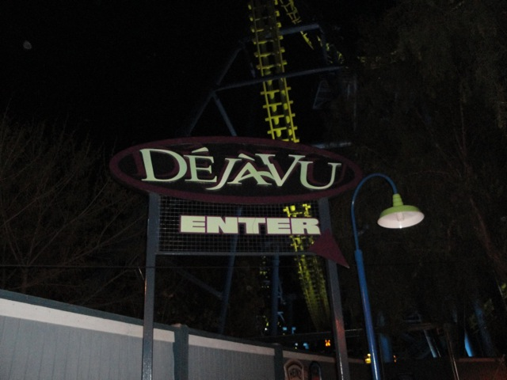
Unfortunetly, DejaVu was still closed.
We rode Goldrusher during ERT.
As well as Riddlers Revenge.
Superman was running quite well for Night ERT.
And how else do you finish this update than with Night ERT on X2? Westcoast Bash kicked ass this year and I'm sure 2011 will be even better!!!
Home